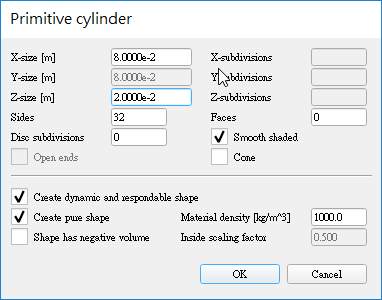
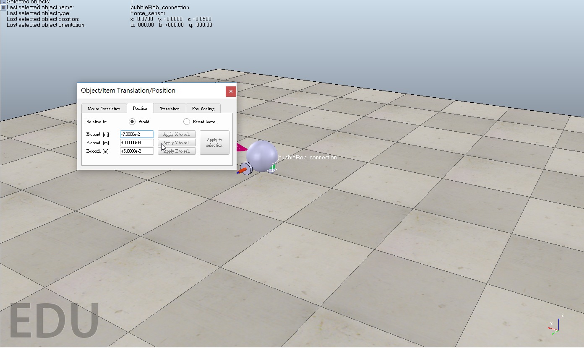
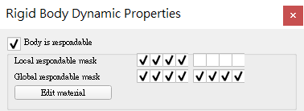

bobbleRob製作
1.創建 [Menu bar --> Add --> Primitive shape --> Sphere]

新增直徑為 0.2 m 的球體

雙擊球體，打開編輯視窗，將Collidable(可碰撞)、Measurable(可測量)、Renderable(可渲染)、Detectable(可檢測)都打勾
接著在選單雙擊Sphere將物件名稱改為BubbleRob就完成本體設定
2. 點選球體，移動球體位置，到translation，在Z軸上打上 0.02，Relative to 在World 後，點Translate selection，球體就會往上到適合的位置

3. [Menu bar --> Add --> Proximity sensor --> Cone type] 新增距離感測器
將sensor利用旋轉功能在Around Y及Z輸入90
位置為X-coord輸入0.1及Z-coord輸入0.12
4. 雙擊感測器進入編輯視窗，點擊Show volume parameter按鈕
輸入: Offset : 0.005 Angle : 30 Range : 0.15
點擊Show detection parameters，取消Don't allow detections if distance smaller than
將感測器名稱設定為bubbleRob_sensingNose，就完成感測器設定了。
在Scene hireachy(場景等級)將完成設定的sensor放在bubbleRob下
最後將兩項物件Edit->"Make last selected object parent"連結成一個物件,如下圖
5. 建立bubbleRob的輪子
建立一個cylinder
尺寸為(0.08,0.08,0.02)

跟本體一樣將object common properties內的特殊屬性都打開
更改絕對位置及絕對方向 ( 0.05 , 0.1 ,0.04 )，
旋轉(-90,0,0)
此物件命名為bubbleRob_leftWheel
更改完複製一個將絕對位置Y座標設 -0.1
此物件命名為bubbleRob_RightWheel
Add->joint->Revolute(迴轉)建立一個軸，建立完成按住ctrl選擇剛剛的bubbleRob_leftWheel然後在postion(位置)及 orientation(方向)內選擇apply to selection來複製輪子的參數，這樣軸的位置就會跟左邊輪子一樣了。
完成左邊輪軸設定後，用同樣方式製作右輪軸。
最後將輪子層級放置在輪軸底下，輪軸層級則置於本體下
在軸的dynamic對話框將Target velocity設至50
6. 新增一個直徑0.05的球，一樣打開所有特殊屬性
[Menu bar --> Add --> Force sensor]
增加一個力傳感器並向上移動0.05
與球連接起來
跟剛剛的滑塊接合成一個物件，這個物件的位置設定X=(-0.07)

執行模擬後會發現滑塊會微微震動，那是因為滑塊跟本體互相碰撞了，為了避免這種狀況，開啟滑塊及本體的shape dynamics properties將local respondable mask分別設定為00001111及11110000這樣兩個物件就不會互相碰撞了。
本體設定
滑塊設定

7. 在collection對話框內
點Add new collection ，選擇新的集合項目為bubbleRob，點選Add ，並改名為 bubbleRob_collection

8. 在選單點選Calculation module在distance(距離)下

點Add new distance object，選擇新的集合項目bubbleRob_collection，重命名為bubbleRob_distance

9.新增一個Graph命名為bubbleRob_graph，將graph拉到bubbleRob底下
開啟graph properties，將Display XYZ-planes選項取消打勾
並設定graph的位置再 ( 0，0，0.005 )，接著Add new data stream to record，視窗上方(Data stream type)選擇Object: absolute x-position下方(Object / item to record)選擇bubbleRob_graph，在Data stream recording list會出現剛剛新增的設定，Y軸跟Z軸也用同樣方式做設定。
為了能夠測量機器人跟環境之間的最小距離再新增一個設定上面選擇Distance:segment length下方選擇bubbleRob_distance。
將XYZ軸及距離設定分別命名為bubbleRob_x_pos、bubbleRob_y_pos、bubbleRob_z_pos、 bubbleRob_obstacle_dist。
選擇bubbleRob_xpos在底下的Time graph properties將Visible取消掉，其他兩軸也用相同方式操作。
10. 點 Edit 3D curves

再點 Add new curve，在對話框哩，如下圖設定 :
點選下面的 Relative to world 並設定 Curve width 為 4
11.建立cylinder
增加數個(0.1,0.1,0.2)的cylinder包圍bubbleRob，將cylinder的特殊屬性參數全部打開，移動cylinder途中按著shift可以進行更細微的移動，按住ctrl則可以讓物件可以在正交方向移動。
12.model設定
選擇bubbleRob後在object common properties內將Object is model base和Object/model can transfer or accept DNA都打勾，這樣bubbleRob邊界框就包含底下所有的物件在內了。
13.將兩個joint、sensor跟graph都選起來然後將參數設定ignored by model bounding box，讓模型的邊界框略過sensor跟joint然後將joint跟sensor的camera visibility layer 2取消打勾改為打勾10，這樣在畫面上就不會看見軸跟sensor範圍了，最後將感測器、兩個輪子、支點、圖表的Select base of model instead都打勾，這項設定讓我們只能一次移動整個機器人而不是單個零件，能避免定位好的零件被移動。
14. 增加一個新的感測器
打開 vision sensor ，位置、角度跟BubbleRob's proximity sensor同樣
將 Far clipping plane 設為1，Resolution X / Y 設為 256 / 256
再來選擇 Show filter dialog，點 Edge detection on work image 再來點 Add filter 來新增
並按旁邊向上的箭頭使它到中間
然後雙擊改 Threshold = 0.2
放到proximity sensor底下
15. 在 scene 上 右鍵 add floating view
然後在浮動視窗上面 選 view > Associate view with selected vision sensor

16.程式:位於工具列的script功能可以編輯code
最後的步驟要將code放進完成的模型內，選擇bubbleRob點選(Add->Associated child script --> Non threaded)
新增一個non-threaded child script，接著點選bubbleRob旁邊的圖示(如附圖)就能打開script，將code複製在原本的code後面關掉視窗就完成了。

將程式碼輸入

注意以下三行名稱是否正確
手足球圖檔 << Previous Next >> 個人操作影片